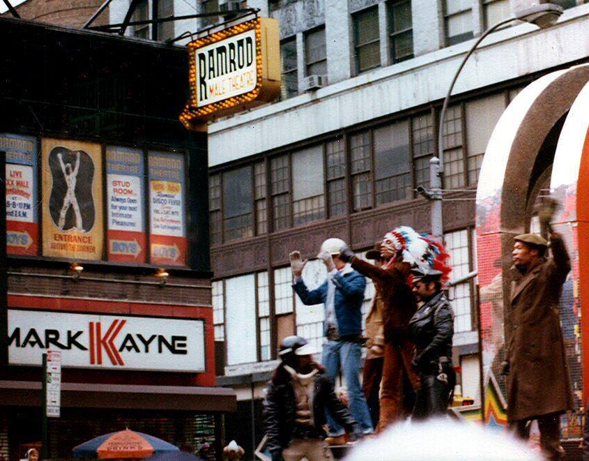

Queensboro Bridge, New York, 1964 © Evelyn Hofer
Queensboro Bridge, New York, 1964 © Evelyn Hofer

The backside of the Soldiers’ and Sailors’ Monument, Riverside Park, 1948
New York. Central Park West, Looking North from 70th Street, 1929.

14th between 2nd and 3rd Ave, 1989

New York. Mott Street, April 27, 1965.
Lower East Side schoolyard, 1984
NYPL 1979

Paul McDonough, 1969

Greenwich and Chambers, 1974
David Bailey, photograph of Jean Shrimpton, NYC 1962
The Palladium in the 80s.
New York in the 50s, photography by Saul Leiter

Harlem, 1985 | Photo: Matt Weber
Meditating by the foul waters of the Hudson, 1973

NYC, 1954 by Marvin E. Newman

2nd Ave and 14th St, 1976
70s gangs

Keith Haring, 1984.
photo by Tseng Kwong Chi

New York 1962
Waiting.

The Savoy, circa 1950

Cinerama Theatre, 1579 Broadway, ca. 1974

Westway All Male Cinema, on West Street, 1979

A child poses in front of the Verrazano-Narrows Bridge, during its construction.
via the Staten Island Advance


The Village People at the Ramrod Theater, a Thanksgiving Day tradition

Ed Koch loves you

Here’s a good shot of the 7th Avenue Grindhouses. We can clearly see The Embassy and The Cine 1 & 2. You can just barely see The Doll’s marquee obscured by a city bus. I love the old yellow cab dropping patrons off at The Embassy!

times square 1969 / leonard freed

Traffic, 1983

Weegee, Accident on the upper roadway of Grand Central Terminal (1944)(via Hyperallergic)

St. Patrick’s Day, 1983.

Kitten on the subway
Eddie Hausner: The Harem Body Rub Parlor, Eighth Avenue, New York, 1972

This is a photo of the mom-and-pop deli that existed under the Selwyn marquee for 40 plus years. It was closed down when Giuliani ‘cleaned’ up 42nd Street.

Super Mart on W. 85th, 1986
Filming West Side Story
Food on Fifth Ave, 1970s


Scenes from the Lower East Side in the late 1980s. More recent scans of some of my old analog photos; I believe these photos were taken very early in 1988.
8th Ave and 48th Street, 1986

Waiting on line for Star Wars, 1977

Brooklyn, 1969

Super Bus Hitcher Man!
Broadway and 101st, 1980
Photo by Terry Lopez, 1985
Brooke Shields in Washington Square Park, 1978
Richard Avedon Harlem, New York 1949
Harris Theater, 226 W42nd Street, ca. 1990

79th and Broadway, 1972. Looking East.
Ah, thanks!